| 日付 | 2017年2月12日（日） |
|---|---|
| 山域 | 阿武隈周辺 |
| メンバー | 家族（妻、長女・5歳、長男・3歳） |
| 山行形態 | 子連れ日帰り |
| アクセス | 車 |
| ルート (Map) | 洗心館前駐車場 (8:39) - (10:13) 難台山 (10:33) - (11:38) 洗心館 - (12:10) 吾国山 (12:50) - (13:10) 洗心館前駐車場 |
今年初めての山は吾国山に行くことにする。
筑波山地の一角にある比較的小さな山だ。
山頂近くまで車で行ける楽々コースなので、
山を歩き始めたばかりの息子でも大丈夫そうだ。
車道脇にある駐車場に車を停める。
低山だが意外にも周りには雪が見られる。
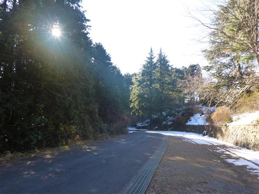
駐車場から南に行くと難台山、北に行くと吾国山だ。
まずは南の難台山を目指す。
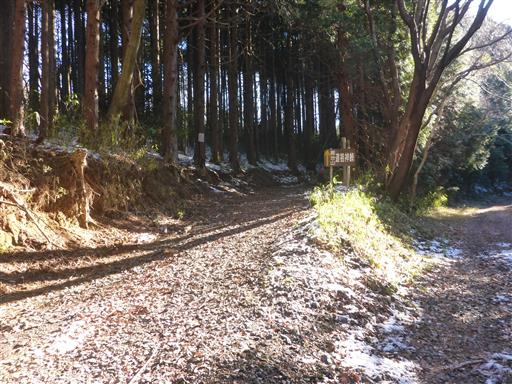
登山道はいきなり雪に覆われる。子供たちはいつも通り、早速棒を拾っている。
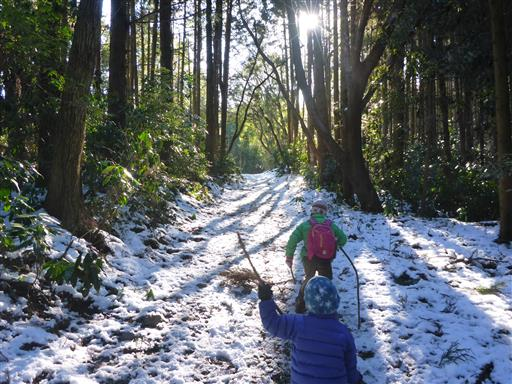
登山道は北側斜面になるため雪が多い。
山に不慣れな息子は少々苦戦している。
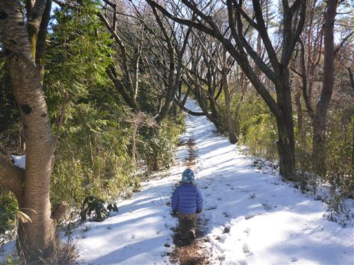
雪があっても行動はいつも通り。雪の上に何かを見つけて遊んでいる。
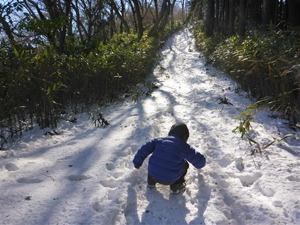
雪の斜面を登りきると難台山の山頂に到着する。標高553m。
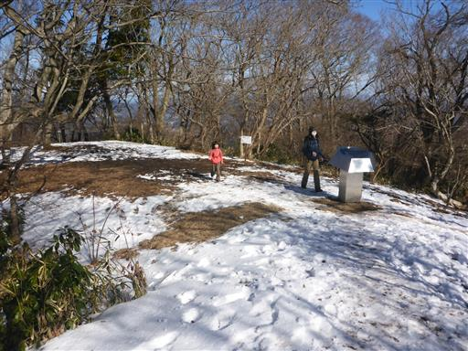
山頂からは筑波山の眺めが良い。筑波山はこの辺りの山の中の盟主だ。
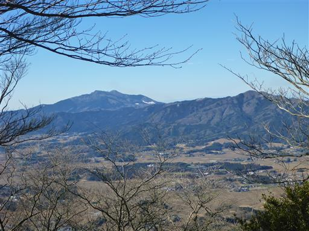
山頂には小さな祠が祀られている。
まだ10時半なのでここでは昼食をとらず、おやつを食べたら下山を開始する。
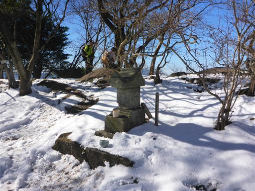
雪道の下山は難しい。慎重に下っていく。
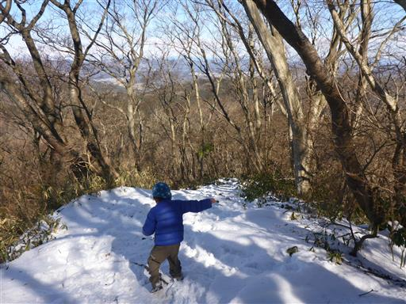
姉弟で手をつないで歩く。息子に歩きやすいところを譲ってあげるなど、
娘はいろいろ気を配れるようになってきた。
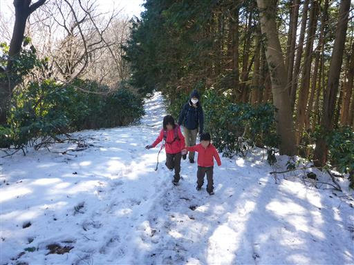
駐車場近くにある洗心館という施設まで戻ってくる。
青少年対象の宿泊学習施設だが、もう閉鎖されているようだ。
ここから吾国山を目指す。
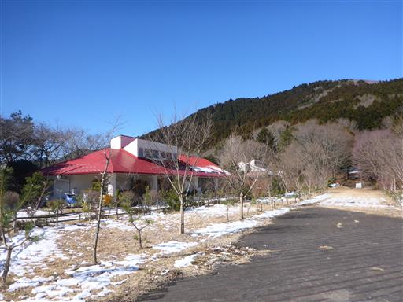
空はよく晴れ渡っている。
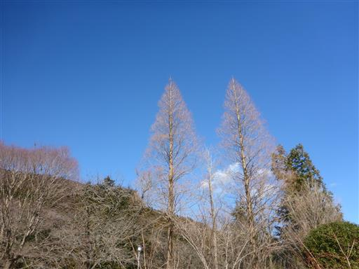
こちらは南側斜面を登ることになるため、あまり雪はない。
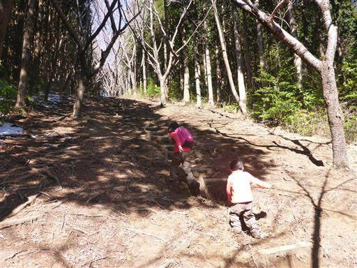
一登りで吾国山の山頂に到着する。標高518m。
山頂には小さな標識がある。
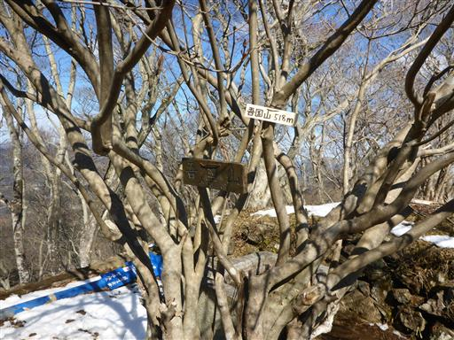
真ん中には神社が祀られていて、周りは石垣のようなもので囲まれている。
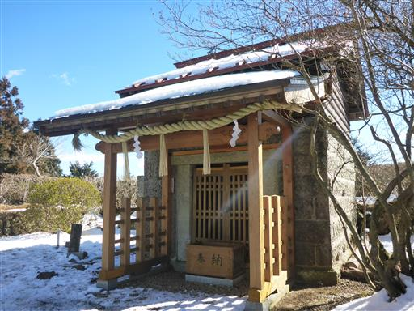
石垣の上をぐるっと回ると素晴らしい展望が広がる。
遠くに日光方面の白い山々が見えるが、少し霞んでいるのが残念だ。
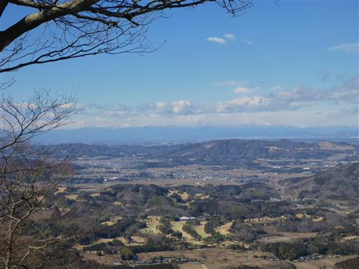
こちらは筑波連山。遠くに見えるのが筑波山だ。
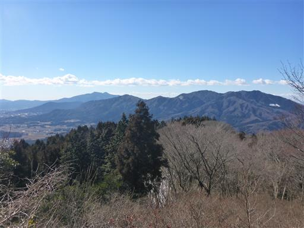
山頂で少し遅めの昼食をとり、のんびり休憩したら下山する。
今回は低山で歩行時間の短い山を選んだが、思った以上に雪が多く苦しめられた。
毎年のことだが、この時期に子連れで登れる山を探すのは難しい。
次回はもう少し南の山を目指そうと思う。
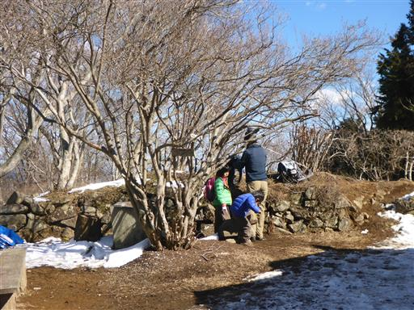